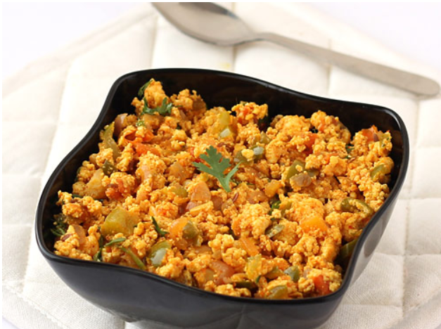

PaneeR-Burjhi
Paneer Bhurji is a popular North Indian spiced scrambled cottage cheese dish.

Paneer bhurji is a popular North Indian dish made of spiced, crumbled, or grated paneer (Indian cottage cheese) scrambled and sautéed with onions, tomatoes, green chilies, and aromatic spices.
Ingredients Required
- 200 to 250 grams (crumbled or grated)
- Oil or Ghee / Butter: 2 to 3 tablespoons
- Cumin Seeds (Jeera): ½ teaspoon
- Onions: 1 medium-sized (finely chopped)
- Tomatoes: 1 to 2 medium-sized (finely chopped)
- Green Chilies: 1 to 2 (finely chopped)
- Ginger-Garlic Paste: 1 teaspoon
Step-by-Step Instructions
- Temper the spices: Heat 1 tablespoon of oil and 1 tablespoon of ghee in a pan on medium heat. Add ½ teaspoon of cumin seeds and a pinch of asafetida (hing), letting them crackle for a few seconds.
- Sauté the aromatics: Add the finely chopped onions and green chilies. Sauté for 3 to 5 minutes until the onions turn translucent or light golden. Stir in the ginger-garlic paste and cook for another minute until the raw smell disappears.
- Add the tomatoes and spices: Add the chopped tomatoes along with turmeric powder, red chili powder, coriander powder, garam masala, and salt. Cook for 3 to 4 minutes until the tomatoes turn soft and oil begins to separate from the sides.
- Fold in the paneer: Add the crumbled paneer to the pan. Mix gently so the paneer absorbs the masala coating.
- Simmer briefly: Cover and cook on low heat for 2 to 3 minutes so the paneer stays soft without drying out.
- Garnish and serve: Crush 1 teaspoon of kasuri methi between your palms and scatter it over the bhurji along with fresh chopped coriander leaves. Give it a quick toss and serve hot with rotis, parathas, or bread.